Mihai in Harpers Ferry, WV

July 2002
I traveled (along with several other people) to Harpers Ferry, West Virgina for a MURI meeting (since the WiSA project I work on is sponsored by ONR). A fairly large group from Wisconsin participated in this meeting:
- Professors:
- Somesh Jha (http://www.cs.wisc.edu/~jha)
- Tom Reps (http://www.cs.wisc.edu/~reps)
- Bart Miller (http://www.cs.wisc.edu/~bart)
- Students:
- Alexey Loginov (http://www.cs.wisc.edu/~alexey)
- Vinod Ganapathy (http://www.cs.wisc.edu/~vg)
- Gogul Balakrishnan (http://www.cs.wisc.edu/~bgogul)
- Jon Giffin (http://www.cs.wisc.edu/~giffin)
- Anne Mulhern (http://www.cs.wisc.edu/~mulhern)
- me
Click the thumbnails to see the larger images. Each image is about 100 kB, in JPEG format, with a resolution of 1024x706 for landscapes, and symmetrically similar for portraits.
| 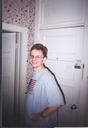
Photo # 1
10 July 2002 - Alexey Loginov in the hotel room (at the Hilltop House Hotel). | 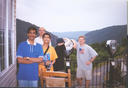
Photo # 2
10 July 2002 - On the patio of the Hilltop House Hotel: Vinod Ganapathy, Jonathon Giffin, Gogul Balakrishnan, Anne Mulhern, Alexey Loginov. | 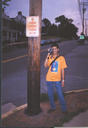
Photo # 3
10 July 2002 - In Harpers Ferry, at the entrance of the town of Bolivar: Gogul Balakrishnan. |
| 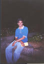
Photo # 4
In Harpers Ferry, in front of "The Jackson Rose": Vinod Ganapathy. | 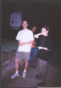
Photo # 5
In Harpers Ferry, in front of "The Jackson Rose": Jonathon Giffin, Gogul Balakrishnan, Anne Mulhern. | 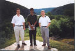
Photo # 6
In Harpers Ferry, on the landing in front of the Hilltop House Hotel, with the Potomac-Shenandoah confluence in the background: me, Vinod Ganapathy, Alexey Loginov. |
| 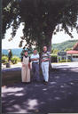
Photo # 7
In Harpers Ferry, on the landing in front of the Hilltop House Hotel: Anne Mulhern, Alexey Loginov, Jonathon Giffin. | 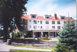
Photo # 8
In Harpers Ferry, the front of the Hilltop House Hotel. | 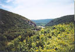
Photo # 9
In Harpers Ferry, on the landing in front of the Hilltop House Hotel, looking at the railroad bridge spanning the Potomoc at the confluence with the Shenandoah. |
| 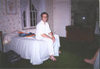
Photo # 10
In Harpers Ferry, in Jonathon Giffin, Vinod Ganapathy, and Gogul Balakrishnan's room: me. | 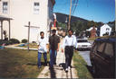
Photo # 11
In Harpers Ferry: Gogul Balakrishnan, Vinod Ganapathy, Somesh Jha. | 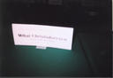
Photo # 12
In Harpers Ferry, in the MURI meeting room inside the Hilltop House Hotel. |
|
Photo # 13
In Harpers Ferry, in the MURI meeting room inside the Hilltop House Hotel: Ralph Wachter, Connie Heitmeyer, Somesh Jha. |
Photo # 14
In Harpers Ferry, in the MURI meeting room inside the Hilltop House Hotel: Gary Toth, Chris Greeney, Ralph Wachter, Connie Heitmeyer. |
Photo # 15
In Harpers Ferry, in the MURI meeting room inside the Hilltop House Hotel: Anne Mulhern, Brian Schalcosky, Thomas Reps, Gary Toth, Ralph Wachter. |
|
Photo # 16
In Harpers Ferry, in the MURI meeting room inside the Hilltop House Hotel: Gogul Balakrishnan, Jonathon Giffin, Anne Mulhern, Brian Schalcosky. |
Photo # 17
In Harpers Ferry, in the MURI meeting room inside the Hilltop House Hotel: David Melski, Alexey Loginov, Vinod Ganapathy, Gogul Balakrishnan. |
Photo # 18
In Harpers Ferry, in the MURI meeting room inside the Hilltop House Hotel: David Melski, Alexey Loginov, Vinod Ganapathy, me. |
| 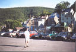
Photo # 19
In Harpers Ferry, in the old downtown, at the bottom of the hill, in the parking lot of the train station (behind the camera), with the Shenandoah in the back and the Potomac to the left: me. | 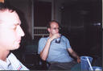
Photo # 20
In Harpers Ferry, at the Armory Pub: David Melski, Jonathon Giffin. | 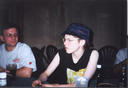
Photo # 21
In Harpers Ferry, at the Armory Pub: Alexey Loginov, Anne Mulhern. |
| 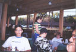
Photo # 22
In Harpers Ferry, at the Armory Pub: Gogul Balakrishnan, and one of the cute girls working at the pub. |
Photo # 23
In Harpers Ferry, at the Armory Pub: Gogul Balakrishnan. | 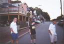
Photo # 24
In Harpers Ferry, dazed and confused in front of the Armory Pub: David Melski, Anne Mulhern, Gogul Balakrishnan. |
| 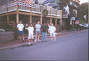
Photo # 25
In Harpers Ferry, in fron of the Armory Pub: David Melski, Anne Mulhern, Gogul Balakrishnan, Jonathon Giffin, Vinod Ganapath, Alexey Loginov. | 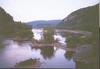
Photo # 26
In Harpers Ferry, at the confluence of the Potomac (left) and the Shenandoah (right) rivers: the original bridge destroyed during the Civil War. | 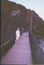
Photo # 27
In Harpers Ferry, on the railroad bridge: Alexey Loginov, Anne Mulhern, Vinod Ganapathy. |
|
Photo # 28
In Harpers Ferry, sunset on the railroad bridge. | 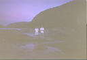
Photo # 29
In Harpers Ferry, halfway across the Shenandoah: Gogul Balakrishnan, Vinod Ganapathy, David Melski. | 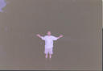
Photo # 30
In Harpers Ferry, halfway across the Shenandoah: Alexey Loginov. |
| 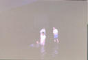
Photo # 31
12 July 2002 - Halfway across the Shenandoah: Vinod Ganapathy, Gogul Balakrishnan, Alexey Loginov, David Melski. | 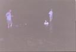
Photo # 32
12 July 2002 - Halfway across the Shenandoah: Jonathon Giffin, Vinod Ganapathy, Gogul Balakrishnan, Alexey Loginov. | 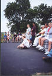
Photo # 33
13 July 2002 - Visiting the Antietam National Battlefield, at the Sunken Road (aka Bloody Lane): Jonathon Giffin, Alexey Loginov, Vinod Ganapathy. |
| 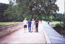
Photo # 34
13 July 2002 - Visiting the Antietam National Battlefield, on the Burnside Bridge: Jonathon Giffin, Gogul Balakrishnan, Alexey Loginov, Vinod Ganapathy. | 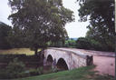
Photo # 35
13 July 2002 - Visiting the Antietam National Battlefield, the NW side of the Burnside Bridge (the tree in center was there during the Civil War). | 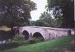
Photo # 36
13 July 2002 - Visiting the Antietam National Battlefield, the NW side of the Burnside Bridge (the tree in center was there during the Civil War). |
| 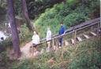
Photo # 37
13 July 2002 - Visiting the Antietam National Battlefield, next to the Burnside Bridge, at the start of the Snavelys Ford Trail: Jonathon Giffin, Alexey Loginov, Gogul Balakrishnan. | 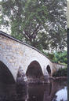
Photo # 38
13 July 2002 - Visiting the Antietam National Battlefield, the SE side of the Burnside Bridge (the tree in center was there during the Civil War). | 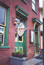
Photo # 39
13 July 2002 - Pub sign in Shepherdstown, WV. Pay special attention to the bottom of the sign! :-) |
| 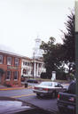
Photo # 40
13 July 2002 - Building in Shepherdstown, WV. |
{kind=link}
{kind=link}
{kind=link}
{kind=link}
{kind=link}
{kind=link}
{kind=link}
{kind=link}
{kind=link}
{kind=link}
{kind=link}
{kind=link}
{kind=link}
{kind=link}
{kind=link}
{kind=link}
{kind=link}
{kind=link}
{kind=link}
{kind=link}
{kind=link}
{kind=link}
{kind=link}
{kind=link}
{kind=link}
{kind=link}
{kind=link}
{kind=link}
{kind=link}
{kind=link}
{kind=link}
{kind=link}
{kind=link}
{kind=link}
{kind=link}
{kind=link}
{kind=link}
{kind=link}
{kind=link}
{kind=link}